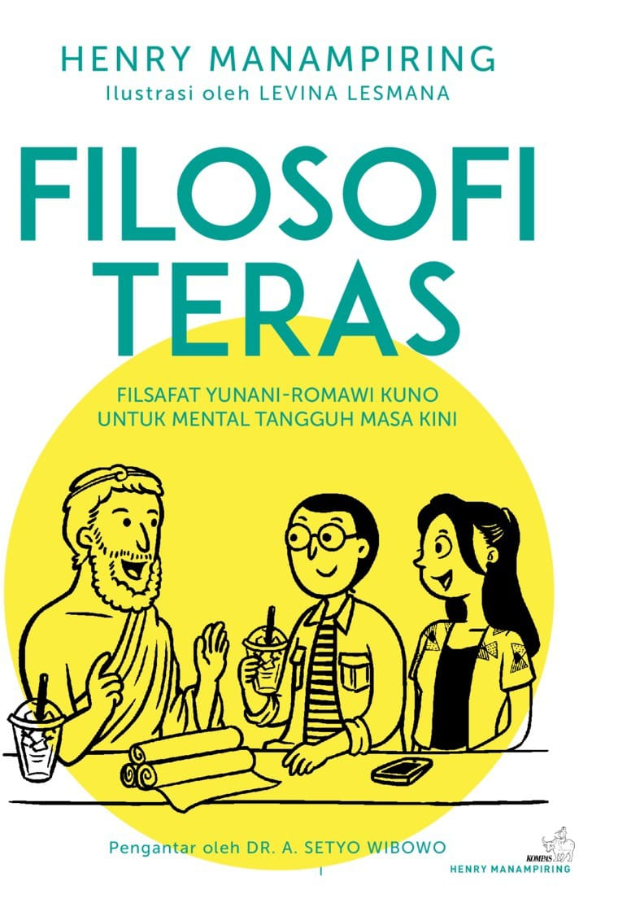
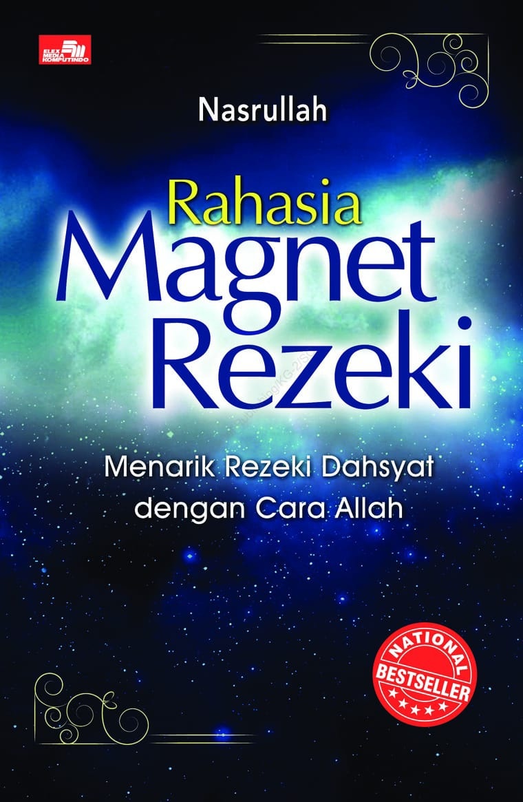
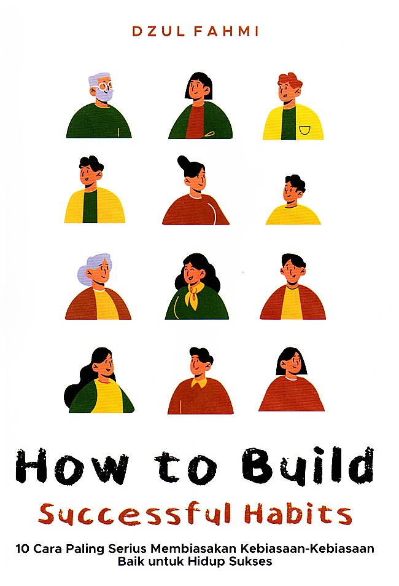

Kamu tuh harus positive thinking, kamu tuh gaboleh pesimis, kamu tuh .... blah blah blah banyak sekali ya kamu tuh hahaha.
Sobat, gimana nih kabar kalian? mental kalian? perasaan kalian? semoga baik - baik aja ya~ Disini mimin mau ngasih tau nih rekomendasi buku untuk self improvement, biar apa? biar kamu makin terlatih untuk selalu berpikir positif dan menjalani hari dengan baik.
Coba lihat foto diatas beserta pertanyaannya, apa sobat bisa menjawab dengan pasti? Shht, jangan takut, mimin bawa 3 buku buat sobat baca untuk melatih pikiran, mental, dan perasaan sobat nihh. Apa saja ya 3 buku ini, yuk kitaa kepoin.
1. Filosofi Teras
Siapa sih yang gak tahu judul buku satu ini? pernah hits dimasanya alias saat baru - baru rilis. Dengan sampul warna putih dan element tiga orang sedang berbincang, sudah menggambarkan sedikit besarnya bahasan dari buku setebal 314 halaman. Filosofi Teras ditulis oleh Henry Manampiring yang menjadi buku best seller dan memenangkan Book of The Year, Indonesia International Book Fair 2019!!
Filosofi Teras berangkat dari penulisnya sendiri dimana adanya survei kecemasan yang dialami dan sekaligus menyajikan tentang sekilas kehidupan si penulis yang dipenuhi emosi negatif. Filosofi Teras digambarkan secara sederhana dengan inti kendali nasib manusia yang akan meniti manusia membawa kehidupan bahagianya. Pada akhirnya, si penulis menyarankan pembaca untuk selalu mengoreksi, menyisinyalir diri untuk berkaca, untuk menata, dan melatih pola pikir yang lebih baik tanpa adanya emosi negatif. Dengan buku ini diharapkan para pembaca mulai menyadari pentingnya diri dan pola pikir untuk menjalani kehidupan yang berharga.
2. Rahasia Magnet Rezeki
Sesuai judulnya, buku ini menyimpan rahasia yang sangat berguna bagi manusia. Buku setebal 248 halaman karya H. Nasrullah, S.Si memiliki sudut pandang bahwa semua hal adalah energi. Dalam menjalani hidup, semua berkaitan dengan mindset dan energi si orang itu sendiri. Saat energi baik, maka datang pula rezeki yang baik. Sudut pandang disini menjelaskan manusia memiliki tujuan yang berbeda dan akan meminta, lalu diberikan hadiahnya sesuai kehendak Allah SWT.
Rahasia Magnet Rezeki mengajarkan kita agar tidak berpikir negatif dan percaya dengan segala hal yang mampu membawa kita pada keadaan lebih baik. Setiap orang dikatakan sudah memiliki rezeki masing - masing, dengan ini kita harus pandai dalam menarik, atau punya magnet rezeki. Dalam buku ini memberitahu bagaimana untuk menanggapi sesuatu lebih tinggi dan luar biasa untuk dapat menggapainya. Tiga kunci dari Rahasia Magnet Rezeki yakni positive thinking, positive feeling, dan positive motivation.
3. How To Build Successful Habits: 10 Cara Paling Serius
Buku terbitan 28 November 2022 dengan tebal 240 halaman mengajak kita untuk refleksi diri berpikir ulang. Tentunya, refleksi diri untuk kehidupan yang efektif dalam sehari - hari. Di buku ini terdapat 10 kebiasaan pengembangan diri, baik hubungan antar individu, kelompok, atau organisasi.
Dengan 10 kebiasaan baik yang diterapkan dalam kehidupan sehari - hari, diharapkan dapat mendukung peran dalam setiap individu untuk memiliki rencana dalam hidupnya. Buku ini mengantarkan pembaca untuk mengenali diri, menemukan diri, dan mengantarkan diri to be good and perfect passion sekaligus soft skill untuk tujuan diri sendiri dalam keberhasilan.
Buku yang membantu self improvement sangat penting untuk kita baca dan sebagai bekal positif dalam menjalani keseharian dan menggapai keberhasilan kita.
You will never change your life until you change something you do daily. The secret of your success is found in your daily routine. - Darren Hardy
created by
| Nama | : | Putri Macrcella |
|---|---|---|
| NIM | : | 11210251000080 |